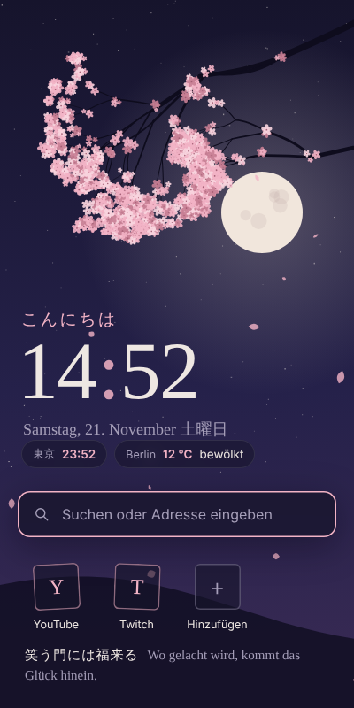

Ein Browser, so ruhig wie Kirschblüten.
Sakura ist schnell, schön und schützt dich: Werbeblocker, Passwortmanager, KI-Seitenleiste und verschlüsselter Abgleich zwischen PC und Handy – kostenlos.
Neueste Version wird geladen …


Sakura ist schnell, schön und schützt dich: Werbeblocker, Passwortmanager, KI-Seitenleiste und verschlüsselter Abgleich zwischen PC und Handy – kostenlos.
Neueste Version wird geladen …

Sakura bringt viele kleine Helfer mit – alle abschaltbar.
Blockiert Werbung, Tracker und Cookie-Banner. Warnt vor Betrugs- und Phishing-Seiten.
Claude, ChatGPT, Gemini oder Mistral direkt neben der Seite – mit deinem eigenen Konto. Seiten zusammenfassen mit einem Klick.
Speichert Passwörter verschlüsselt, schlägt starke Passwörter vor und warnt bei Datenlecks.
PC und Handy gleichen Lesezeichen, Verlauf und Tabs ab – Ende-zu-Ende verschlüsselt, nur mit einem Sync-Code.
Getrennte Tab-Sammlungen für Schule, Gaming oder Privat – mit eigener Farbe.
Werbung auf YouTube überspringen, Twitch-Emotes, Bild-in-Bild, Clips speichern, Lautstärke pro Tab.
Sperrt ablenkende Seiten zu festen Zeiten – und zeigt deine Bildschirmzeit.
Lesemodus, Leseliste zum Offline-Lesen, Notizen an Webseiten.
Von Kirschblüte über Matcha bis Neon – oder deine eigene Akzentfarbe. Mit Liquid-Glass-Oberfläche.
Sakura führt dich beim ersten Start durch alles Wichtige.
Installer für Windows, AppImage für Linux oder APK für Android oben laden.
Lesezeichen, Passwörter und Anmeldungen aus Chrome, Edge oder Firefox mit einem Klick übernehmen.
Sync-Code am PC erzeugen, am Handy eingeben – fertig. Updates kommen automatisch.